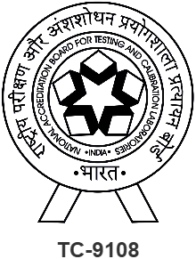

Headquartered in Paharpur, Indas, Bankura, West Bengal, Precisian Scientific Instrument Suppliers is an MSME-registered enterprise (UDYAM-WB-0023166) dedicated to the end-to-end setup, commissioning, and operational support of specialized laboratories, scientific research centers, and industrial facilities across Pan India.
We cater to educational laboratories, food and edible oil testing units, agricultural grading facilities, R&D centers, and high-tech manufacturing plants with calibrated instruments, borosilicate glassware, standard lab chemicals, SS316 gas manifold pipelines, and customized glovebox spares.
Backed by over 15 years of specialized auditing experience and advanced quality assurance qualifications, we guide organizations through ISO 9001:2026, ISO 22000, BRCGS, FSSAI State & Central licensing, AGMARK certification, and NABL (ISO/IEC 17025) accreditation.
End-to-end supply, installation, pressure testing, and commissioning of industrial and laboratory gas infrastructures featuring orbital welding joints and SS316 seamless tubing.
Sourcing and supplying calibrated scientific testing hardware, glassware, chemicals, and specialized research spares tailored for continuous lab and glovebox operations.
Silicon O-rings, customized glovebox antechamber spares & pressure units
Ongoing technical partnership with laboratories and manufacturing enterprises to streamline testing workflows, integrate instrumentation, and maintain audit readiness.
Orbital Welding & High-Grade SS316 Gas Manifold Systems
Precision gas distribution systems engineered, orbital-welded, leak-tested, and commissioned for analytical instruments, inert-atmosphere gloveboxes, and high-tech manufacturing units.
Orbital Welding & SS316 Tubing: Crevice-free internal weld beads maintaining ultra-high carrier gas purity.
Line Regulators & Ex-Lok Valves: Leak-tight compression fittings and point-of-use isolation controls.
Compressors & Refrigerant Dryers: Moisture-controlled, oil-free compressed air integration.
FRLSH Cabling & Gas Detection: Fire-retardant wiring paired with continuous leak sensors & shutoff alarms.
Driven by over 15 years of specialized auditing experience and advanced QA qualifications — guiding food, agriculture, and industrial laboratories across India.
FSSAI Consulting
Step-by-step guidance for Central & State FSSAI licensing, Schedule IV hygiene ratings, audit preparation, performance evaluations, and food testing lab setup.
AGMARK Certification
End-to-end compliance liaison and lab commissioning for agri-commodities — including specialized mustard oil testing laboratories, hardware selection, and filing.

NABL Accreditation
Support for ISO/IEC 17025 laboratory accreditation, SOP drafting, quality control benchmarks, calibration traceability, and pre-assessment audit readiness.
ISO 9001:2026 & ISO 22000
Quality & Food Safety Management
Gap analysis, HACCP controls, QMS/FSMS documentation, internal mock audits, and certification readiness for ISO 9001:2026 and ISO 22000 frameworks.
Brand Reputation Compliance Global Standards
Audit preparation for international BRCGS food safety and quality standards, site traceability systems, food defense, and non-conformity closure.
15+ YEARS OF EXPERIENCE
Audit Readiness & QA Advisory
Structured quality audits, SOP authoring, and compliance coaching tailored to edible oil mills, manufacturing plants, and research laboratories.
We partner with scientific research institutes, educational bodies, high-tech engineering firms, and edible oil / food processing plants across West Bengal and Pan India.
Structured commissioning workflow from initial testing scope analysis to calibrated handover and ongoing audit readiness.
01Requirement Consultation
Review testing scope (mustard oil analysis, food QC, academic syllabi, or R&D assays), gas utility loads, and target certifications.
02Infrastructure Planning
Design laboratory floor zoning, chemical-resistant furniture placement, SS316 gas manifold routing, safety clearances, and utility drops.
03Equipment Procurement
Source calibrated scientific instruments, borosilicate glassware, standard lab chemicals, Ex-Lok valves, and glovebox spares to budget.
04Installation & Calibration
Complete on-site assembly, orbital welding, pneumatic leak testing, electrical checks, gas detector testing, and calibration verification.
05Compliance & Handover
Finalize SOP manuals and audit readiness documentation for ISO 9001:2026, ISO 22000, BRCGS, FSSAI, AGMARK, or NABL assessment.
Technical & Compliance FAQ
Frequently Asked Questions
What laboratory equipment and specialized components do you supply?
We supply high-grade scientific instruments, including microscopes, pipettes, centrifuges, spectrophotometers, analytical balances, laboratory glassware, safety gear, lab furniture, and quality lab chemicals required for educational, research, and industrial testing laboratories — as well as specialized research components like silicon O-rings, customized glovebox antechamber accessories, and pressure regulation units.
Do you provide turnkey laboratory setup and installation services?
Yes, we offer complete turnkey laboratory setup and installation services, covering planning, infrastructure design, equipment procurement, hardware calibration, workflow optimization, maintenance, and final commissioning support across West Bengal and Pan India.
What gases and hardware are covered under Tubeline Engineering & Gas Manifold Systems?
We supply, install, test, and commission orbital welding joints and high-grade SS316 seamless tubing for Helium, Argon, Oxygen, Nitrogen, Nitrous Oxide, and Acetylene manifolds, including High-Pressure Line Regulators, Ex-Lok Valves, Compressor and Refrigerant Dryer integrations, FRLSH Cabling, and Advanced Gas Detection Systems.
Which international quality and food safety auditing standards do you support?
Our leadership brings over 15 years of specialized auditing experience and advanced QA qualifications to help facilities prepare for ISO 9001:2026 & ISO 22000 (Quality & Food Safety Management Systems), BRCGS (Brand Reputation Compliance Global Standards), FSSAI, AGMARK, and NABL audits.
Do you help with NABL accreditation?
Absolutely. We guide laboratories through the NABL accreditation process, helping with standard operating procedures (SOPs), documentation, ISO/IEC 17025 guidelines, calibration traceability, audit preparation, and quality audits.
What is AGMARK certification and how do you assist?
AGMARK is a quality certification mark for agricultural products in India. We assist businesses with laboratory setup for testing (including specialized mustard oil testing laboratories), equipment selection, documentation, application filing, performance evaluations, and liaison support.
How long does FSSAI licensing take?
The duration depends on whether you require a State or Central FSSAI license. Our consultants streamline documentation, licensing, hygiene ratings, and compliance workflows to ensure minimal turnaround times.
Do you supply and commission laboratories across India?
Yes, while our headquarters is in Bankura, West Bengal, we cater to clients, educational institutes, scientific research centers, and high-tech industrial testing facilities across Pan India.
Can you help educational institutions?
Yes, we specialize in planning and setting up physics, chemistry, biology, and agricultural labs for schools, colleges, and research universities, delivering durable educational laboratory equipment.
Do you provide laboratory consultancy and ongoing operational support?
Yes, we offer comprehensive consulting and operational collaboration services for laboratory design, workflow optimization, instrument integration, maintenance, ongoing quality assurance methodologies, regulatory compliance, and lab modernization.
Which industries do you serve?
We serve the food and beverage industry, agriculture and edible oil production facilities (including mustard oil testing labs), scientific research and R&D centers, high-tech manufacturing facilities, educational institutions, pharmaceuticals, and environmental testing laboratories.